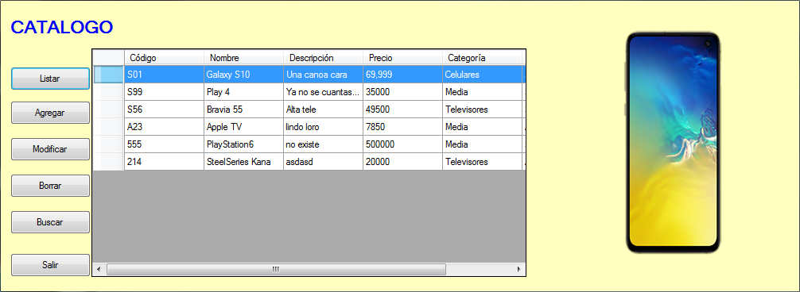
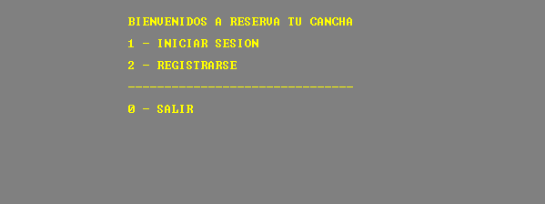

Perez Paul A. Trainee Dev. Software



Catálogo, es una aplicación desarrollada con .Net Framework, esta aplicación se conecta a una base de datos SQL la cual aloja una serie de artículos. La app permite agregar, eliminar, modificar, borrar y buscar artículos. Toda esta información se mantiene mediante una base de datos.

Reserva tu Cancha, es una aplicación desarrollada con C++, el propósito de la app está construida para gestionar predios de cancha de fútbol a la hora de alquilar. Se debe registrar como administrador o como usuario para utilizar la app, como admin se puede dar de baja canchas, modificar, agregar, buscar horarios libres. Además devuelve informes sobre canchas y clientes.